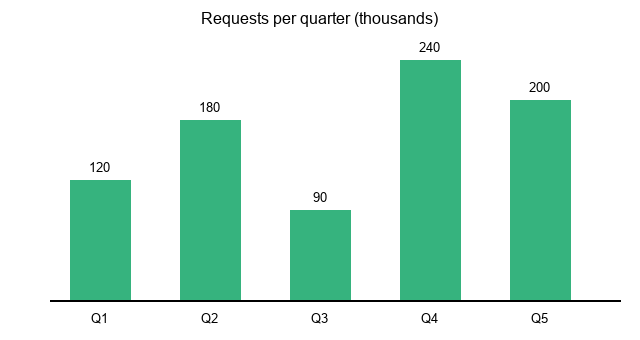

AcmeSync Gateway 2.15
- Release review for partner managers
- Jonas Weber, Platform team
Agenda
- What changes in 2.15
- Asynchronous refunds
- Rollout plan
- Questions
What changes
- Refunds above 2,000 EUR answered asynchronously
- Retry budget raised to 60 per minute
- Sandbox keys valid for 30 days instead of 14
Asynchronous refunds
- The gateway answers 202 Accepted at once
- The partner polls the refund's status URL
- A webhook reports the final state

Refund latency before and after
- Measured on the staging ledger with 5,000 refunds

Rollout plan
- Week 1: staging only
- Week 2: three pilot partners
- Week 3: every partner in Frankfurt
- Week 4: Dublin
Risks
- Partners that do not poll keep waiting for a synchronous answer
- Webhooks blocked by a partner's firewall
Mitigations
- Old behaviour kept behind a flag until release 2.16
- A test webhook sent during onboarding
Next steps
Questions
- platform-team@acmesync.example is the contact for the rollout